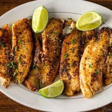

Home
Pan Seared Tilapia

Description
Learn how to cook tilapia with this easy, 15-minute recipe for pan-seared tilapia that's delicious and full of flavor.
This simple method of cooking fish fillets is great for a weeknight meal. Serve with fresh veggies.
Ingredients
- Tilapia filets
- Salt and pepper
- 1/2 cup of flour
- 1 tablespoon of olive oil
- 2 tablespoons of butter
- Lemon juice
- Parsely or time
Steps
- Rinse tilapia fillets in cold water and pat dry with paper towels. Season both sides of each fillet with salt and pepper.
- Place flour in a shallow dish. Gently press each fillet into the flour to coat and shake off any excess.
- Heat olive oil in a large skillet over medium-high heat. Cook tilapia fillets in the hot oil, in batches if necessary, until fish flakes easily with a fork, about 4 minutes per side.
- Brush melted butter onto the tilapia fillets in the last minute before removing from the skillet. Drizzle fillets with lemon juice and garnish with parsley and thyme.